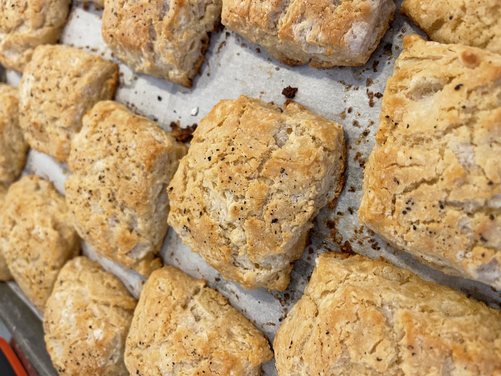
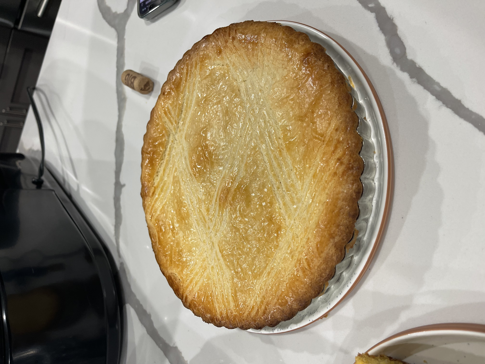

croissants
Katie's croissants are made entirely by hand using high-quality,
European-style
butter. You can choose plain, chocolate (pictured), or frangipane (almond, background).
bagels
Katie's naturally-leavened bagels are the perfect vehicle for a breakfast sandwich,
and
can
be
made in just about any flavor you like!
focaccia
Focaccia has become one of Katie's favorite breads to make because of its
versatility.
Her
favorite variation is topped with garlic, scallions, red pepper flakes, sesame
seeds,
olive
oil,
and flaky sea salt. But you can order it any way you like - message her for more
suggestions
if
you're unsure!

biscuits
As a native of Auburn, Alabama, Katie would be remiss if she didn't include biscuits
somewhere
on this list. The flavor pictured is miso buttermilk, topped with fresly-cracked
black
pepper.
Another favorite is sour cream and chive.

desserts
In addition to more "simple" bakery items, Katie enjoys taking on a good special
occasion
project. Pictured is a Geateau Basque, a traditional two-layer French pie filled
with
jam
and
pastry cream.
sourdough
Last but not least, what started it all - sourdough bread! Katie has learned to make
many different varieties, and is ready to take on whatever your heart desires.